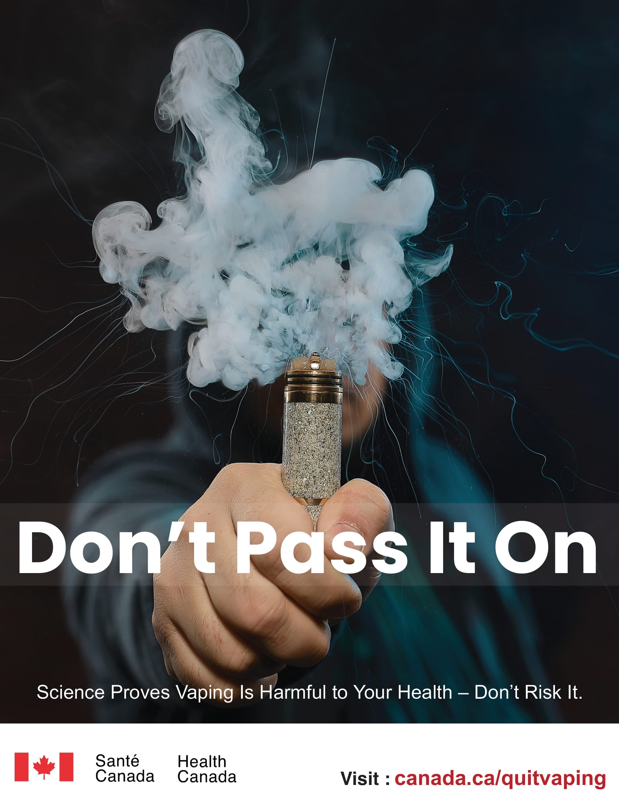

This project is dedicated to raising awareness about the serious dangers of vaping, focusing on the harmful effects and health risks associated with e-cigarette use. As vaping continues to grow in popularity, many individuals, especially younger populations, remain unaware of its potential long-term consequences. The images above serve as powerful visual representations of the health risks linked to vaping, shedding light on the alarming impact it can have on both short-term and long-term health. These visuals aim to highlight key issues such as respiratory damage, addiction, and the potential for irreversible harm, helping to make the risks more tangible and relatable for the audience. Through this awareness campaign, our goal is to educate individuals on the often-overlooked dangers of e-cigarettes and empower them to make informed, healthier choices. By presenting the truth behind vaping, we hope to inspire a shift in attitudes and encourage positive lifestyle changes, ultimately leading to a reduction in vaping-related health issues. This initiative stands as a call for action, urging individuals to take control of their health and make choices that prioritize their well-being.